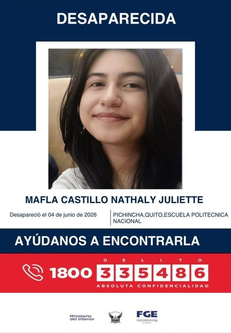
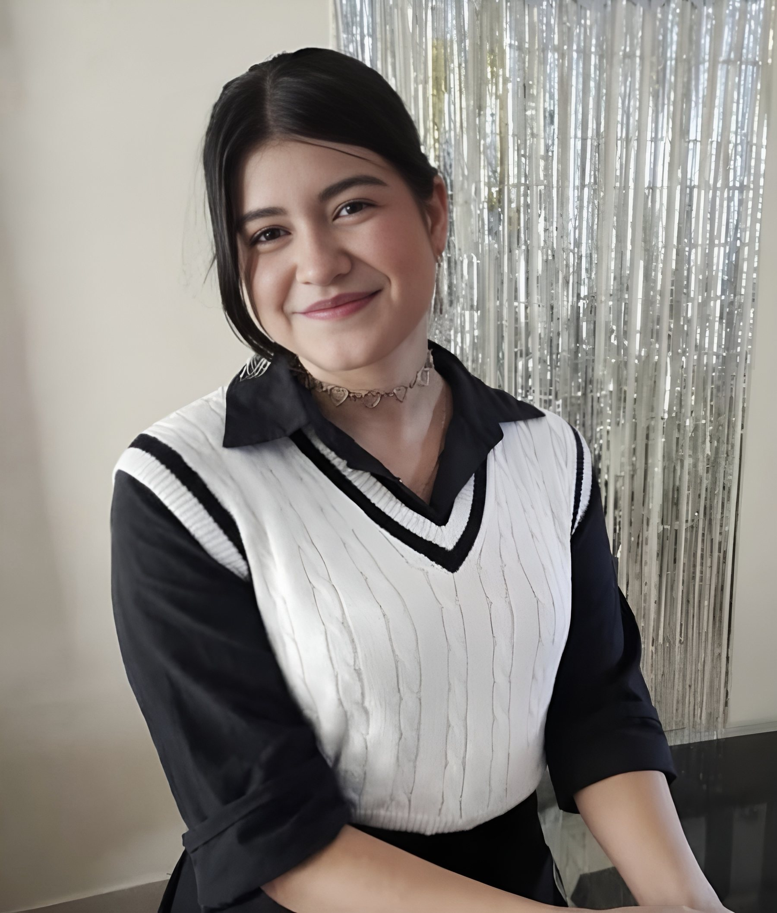
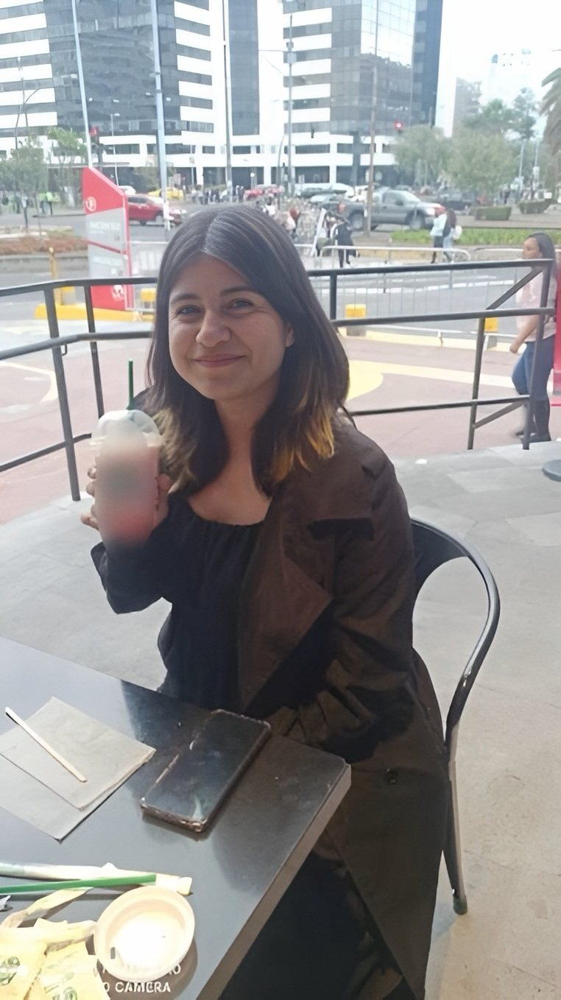

Boscán y La Moni · 12 al 26 de junio de 2026 · Tres entregas sobre un caso abierto
El último recorrido de Nathaly Mafla
Una estudiante de 20 años entra a un baño de la Escuela Politécnica Nacional, deja el celular con un amigo y sale sola por otra puerta. Camina más de una hora y veinte minutos por un trayecto que se hace en media hora, con un tobillo que se le hincha. Cinco días después la encuentran veinte metros abajo en una quebrada de la Vicentina. El bolso que, según el parte, estaba junto al cuerpo, seguía en objetos perdidos de la universidad.
Medio Boscán y La MoniPublicado Junio de 2026
RecReconstrucción con cámaras de seguridadQuito · jueves 4 de junio de 2026
Cámara que la registróSin cámara1 h 20de recorrido; el mismo trayecto a pie, sin detenerse, toma media hora
20años tenía Nathaly Mafla
1 h 20para un trayecto que toma media hora a pie
48 hsin denuncia ni respuesta del amigo que tenía su teléfono
20 mde profundidad tenía la quebrada donde apareció
En cuatro frases
Nathaly Juliet Mafla Castillo, de Tulcán, estudiaba ingeniería en sistemas en la Escuela Politécnica Nacional, en Quito. El jueves 4 de junio de 2026, cerca de las seis de la tarde, entró al campus a usar un baño, dejó el celular con un compañero y no volvió por él. Las cámaras la graban saliendo sola, por otra puerta y sin su bolso.
El martes 9 de junio un dron de la Policía ubicó su cuerpo veinte metros abajo en una quebrada de la Vicentina, boca abajo. La causa preliminar es una caída. Entre el jueves y el sábado nadie denunció la desaparición: el compañero que tenía su teléfono no contestó las llamadas del padre hasta que este puso la denuncia.
Mónica Velásquez reconstruyó con cámaras de vecinos el trayecto que hizo Nathaly: la avenida Patria, un bus en el que quiso pagar con un arete, una escalinata que subió cojeando y agarrándose de la pared, una cancha de fútbol. Después de esa cancha no hay una sola imagen más.
Andersson Boscán mostró las contradicciones del expediente: un bolso que el parte ubicaba junto al cuerpo y que en realidad estaba en objetos perdidos de la universidad; un teléfono abierto por un agente y el padre, fuera de cadena de custodia; ocho prendas en los videos y tres en la quebrada; un UPC sin policías en el camino.
Capítulo 1
La joven que entró al baño y no volvió
Nathaly Juliet Mafla Castillo tenía 20 años, medía 1,65 y venía de Tulcán, en la frontera con Colombia. Estudiaba ingeniería en sistemas en la Escuela Politécnica Nacional, en Quito. De lunes a viernes, código y matemáticas; los fines de semana, clases de estética. Vivía en Quito con su padre, Jairo; su madre, Elizabeth Castillo, vive en Ibarra. No tomaba medicamentos, no tenía depresión, tenía planes, dicen sus padres. Y tenía un detalle que atraviesa toda la historia: un problema en un tobillo. Caminaba cojeando un poco y, cuando caminaba mucho, la pierna se le hinchaba. No le gustaba caminar ni subir gradas.
Nathaly Mafla
El jueves 4 de junio de 2026 dijo en casa que iba a una chiva, a compartir con amigos. La reunión de compañeros de la universidad, con una especie de fiesta en la parte exterior del campus, tuvo entre sus asistentes al rector, según le dijeron a Andersson Boscán fuentes de la investigación, que recopilaba videos de ese encuentro. Cerca de las seis de la tarde Nathaly llegó con dos compañeros a una puerta de la Politécnica porque tenía ganas de ir al baño. El guardia les dijo que no podían entrar. Ella pidió que la dejaran pasar sola. Le dejó el celular a uno de los dos, el que después se presentaría como su mejor amigo, subió al tercer piso y entró al baño de mujeres. No volvió por el teléfono ni salió por esa puerta.
Las cámaras de la universidad la graban saliendo poco después, sola, por una puerta distinta a la que entró y sin su bolso. Los testigos que la vieron entrar no la describen como una persona en condiciones perdidas: podía caminar, moverse, pensar por su cuenta. Lo que pasó adentro sigue sin verse. Según los abogados de la madre, en cada piso hay una cámara esquinera; la del tercer piso la capta al salir. Antes del baño hay un laboratorio donde, se entiende, entró y se demoró unos 40 segundos; en el baño, unos tres minutos. La diligencia para explotar esas cámaras, una audiencia privada que maneja la Fiscalía, al 26 de junio no se había hecho.
48 horaspasaron entre la desaparición, el jueves por la noche, y la denuncia del padre, el sábado 6 de junio a primera hora. El compañero que tenía el teléfono de Nathaly no contestó las llamadas de la familia hasta ese sábado. Dijo que el teléfono se había descargado.
El viernes 5 el padre no durmió: llamó al teléfono de su hija, preguntó a quien pudo. Nadie contestó. El sábado puso la denuncia. La madre se enteró ese día y viajó de Ibarra a Quito. Recién entonces el compañero que tenía el celular respondió al padre, que llamaba desde el jueves. Boscán lo dijo al aire sin nombrarlo, porque el caso tiene doble reserva: no parece el comportamiento de un mejor amigo. Se pierde tu mejor amiga, su familia llama insistentemente y uno tarda 48 horas en contestar. El martes 9 de junio, cinco días después, un dron del servicio aéreo de la Policía sobrevoló la Vicentina desde la avenida Oriental. El cuerpo estaba al fondo de la quebrada, veinte metros abajo entre la maleza, boca abajo, sin una sola cámara alrededor.
Después de 72 horas ya no me buscan viva, me buscan muerta.
Mónica Velásquez, 23 de junio de 2026
Capítulo 2
Una hora y veinte minutos
Entre la Politécnica y la quebrada de la Vicentina hay una hora y veinte minutos de caminata, dijo Boscán el 12 de junio. Mónica Velásquez hizo el trayecto a pie, sin detenerse, desde la puerta por la que salió Nathaly hasta el lugar donde la encontraron: alrededor de media hora. Nathaly tardó más de una hora y veinte minutos, y una parte la hizo en bus. Con un bus de por medio debió tardar menos; tardó más del doble. Nathaly vivía en San Carlos, al otro lado de la ciudad. San Carlos no tiene nada que ver con la Vicentina. Los abogados de la madre saben que tenía amigos en ese sector y toman versiones para saber quiénes.
2:58El diario de La Moni: el recorrido, día por día

El cartel de desaparecida que circuló mientras la buscaban
Minutos después de salir, cámaras de seguridad la captan caminando por la zona de la avenida Patria. No son cámaras del ECU 911: son de los vecinos. Las oficiales de esa zona casi no funcionan. En la intersección de la Patria y la 12 de Octubre, según sus familiares, abordó un bus de la ruta Edén-San Pablo. Subió sin decir una palabra. El chofer la dejó pasar, contó después a la familia, porque le dio pena. Ella quiso pagar con un arete. El recorrido terminó en el sector de San Pablo, cerca del antiguo leprocomio; la cooperativa asegura que bajó de la unidad y habría entregado uno de sus aretes por el pasaje. Los abogados precisan que la última parada de ese bus está en La Floresta y que la primera cámara que la capta después está ya en la Vicentina: caminó de un barrio al otro.
Paso a paso
El recorrido, cámara por cámara
≈ 18:004 jun
Cámaras de la universidad4 jun · ≈ 18:00
Escuela Politécnica Nacional, tercer piso
Llega con dos compañeros a una puerta del campus porque quiere ir al baño. Deja el celular con uno de ellos, sube al tercer piso, pasa por un laboratorio unos 40 segundos y entra al baño unos tres minutos. Sale sola, por una puerta distinta a la que entró y sin su bolso.
Lo que contradice el expediente
El parte policial dice que se la encontró con su cartera. El bolso quedó en el piso del baño del tercer piso, una encargada de seguridad lo llevó a objetos perdidos y entró en cadena de custodia en la universidad, no en la quebrada. La audiencia para explotar las cámaras del campus no se había hecho al 26 de junio.
Minutos después4 jun
Cámaras de vecinos4 jun · Minutos después
Avenida Patria
Camina sola por la zona de la avenida Patria, con las dos manos vacías. Las cámaras oficiales del ECU 911 en ese sector casi no funcionan: las imágenes son de los vecinos.
Lo que contradice el expediente
En los tres videos conocidos no lleva cartera. Va completamente vestida: dos zapatos, dos medias, pantalón, camiseta y una chompa prestada por el compañero que se quedó con su teléfono.
Sin hora4 jun
Sin cámara · testimonio del chofer a la familia4 jun · Sin hora
Patria y 12 de Octubre
Aborda un bus de la ruta Edén-San Pablo sin decir una palabra. El chofer la deja pasar porque le da pena. Quiere pagar con un arete. Baja en el sector de San Pablo, cerca del antiguo leprocomio; la cooperativa dice que habría entregado uno de sus aretes por el pasaje.
Sin hora4 jun
Sin cámara · UPC sin personal4 jun · Sin hora
De San Pablo y La Floresta hacia la Vicentina
La última parada del bus está en La Floresta y la primera cámara que la capta después ya está en la Vicentina: caminó de un barrio al otro. En la subida pasa frente a un UPC.
Lo que contradice el expediente
Según los abogados de la madre, ese UPC no tiene personal: solo dos camionetas policiales sin número de unidad que, cuentan los vecinos, llegan en la mañana y se las llevan en la noche.
18:304 jun
Cámara de un vecino4 jun · 18:30
Escalinata de la Vicentina
Sube cojeando, agarrada de la pared. Se detiene, arranca de nuevo, mira a un punto fijo como si no supiera dónde ir. Quince segundos después pasa una persona vestida de celeste en la misma dirección.
Lo que contradice el expediente
En los videos lleva ocho prendas; en la quebrada la encontraron con tres. Agentes dijeron a la familia que el agua se llevó la ropa; los abogados responden que ahí no hay corriente, apenas un poco de agua alrededor del cuerpo.
Última imagen4 jun
Cámara del sector4 jun · Última imagen
Cancha de fútbol junto a un conjunto habitacional
Es el último lugar donde una cámara la vio. Después de esa cancha no hay una sola imagen más.
9 jun5 días después
Sin cámara · dron del servicio aéreo de la Policía5 días después · 9 jun
Quebrada de la Vicentina, desde la avenida Oriental
El cuerpo aparece veinte metros abajo, entre la maleza, boca abajo. Causa preliminar: precipitación. Entre la avenida y el borde hay una franja de cemento y una zanja; la pendiente no es vertical y tiene ramas.
Lo que contradice el expediente
Nadie denunció la desaparición durante 48 horas: el compañero que tenía el teléfono no contestó a la familia hasta el sábado. El domingo 7 un agente y el padre abrieron el celular y lo devolvieron sin cadena de custodia, según personas presentes.
Reconstrucción a partir de cámaras de vecinos y de la universidad, del testimonio del chofer a la familia, del informe policial con dos escenas y del recorrido a pie que hizo Mónica Velásquez el 23 de junio de 2026. Las horas que no constan en las grabaciones se dejan sin hora.
Desde ahí subió por una escalinata y atravesó el sector del parque de la Vicentina. Es la imagen más difícil de ver. Una cámara la graba a las 6:30 de la tarde: se agarra de la pared, cojea, se detiene, arranca de nuevo, mira a un punto fijo como si no supiera dónde ir. Su madre venía siguiendo la ruta convencida de que por ahí no había subido, porque a su hija no le gustaban las gradas; luego vio la grabación. Médicos que vieron el video de manera extraoficial le dijeron a la familia que eso no se parece a una persona borracha, que se parece a otra cosa. La familia plantea una hipótesis que nadie ha confirmado: escopolamina, una droga que en Quito se ha usado para anular a las víctimas. En la subida pasó frente a un UPC. Según los abogados, ese UPC no tiene personal: solo dos camionetas policiales sin número de unidad que, cuentan los vecinos, llegan en la mañana, se quedan todo el día y se las llevan en la noche.
A la nenita no le gusta subir gradas, no, por aquí no ha de haber subido. Y resulta que luego en la grabación se la ve que ella va subiendo las gradas.
Elizabeth Castillo, madre de Nathaly, en el reportaje del 23 de junio de 2026
Quince segundos después de que Nathaly sube la escalinata, en el mismo video pasa una persona vestida de celeste en la misma dirección. Otro video, difundido por TC Televisión, la muestra cruzando un paso cebra con alguien de chompa celeste detrás, desenfocado. No se sabe si la seguía o si es una coincidencia. Boscán y Velásquez no publicaron el video de la escalinata. Más adelante, Nathaly fue vista en una cancha de fútbol junto a un conjunto habitacional. Es el último lugar donde una cámara la vio. Después de esa cancha no hay una sola imagen más.
El seguimiento
Tres entregas, tres semanas
Entrega 1
Lo que no cierra
Un bolso que aparece donde no estaba
Nathaly sale de la universidad sin bolso en los tres videos conocidos. El parte policial dice que se la encontró con su cartera. Las fuentes de la universidad ubican el bolso en el baño del tercer piso y luego en objetos perdidos. Nadie denunció la desaparición durante 48 horas.
Entrega 2
El último recorrido
Una hora y veinte minutos para media hora de camino
Reconstrucción a pie del trayecto desde la puerta de la Politécnica hasta la quebrada: media hora sin detenerse. Nathaly tardó más del doble, una parte en bus. Las cámaras de los vecinos la muestran subiendo una escalinata cojeando, agarrada de la pared, a las 6:30 de la tarde.
Entrega 3
La defensa de la madre
Un teléfono abierto sin cadena de custodia
Los abogados de Elizabeth Castillo cuentan que un agente y el padre abrieron el celular de Nathaly el domingo 7 de junio y lo devolvieron sin ingresarlo como evidencia; que el compañero que lo tuvo no asistió a rendir versión; que el bolso ingresó en cadena de custodia en la universidad, no en la quebrada; y que el cuerpo apareció con tres de las ocho prendas que llevaba.
30 mintarda el trayecto a pie, sin detenerse, desde la puerta de la Politécnica hasta la quebrada
6:30 p. m.hora en que una cámara la graba subiendo la escalinata de la Vicentina, cojeando
Capítulo 3
El bolso que no estaba en la quebrada
La primera contradicción la abrió una fotografía difundida por TC Televisión: un bolso tirado sobre la tierra. El canal contaba que el parte policial hablaba de una tablet, una billetera, documentos y el bolso encontrados con el cuerpo. Pero en los tres videos en los que Nathaly camina se le ven las dos manos vacías; en ninguno lleva cartera. La madre lo reclamó desde sus primeras declaraciones. Un compañero de la universidad le escribió a Boscán, pidiendo reserva: todos vieron entrar a miembros de la Policía Nacional al campus y llevarse las pertenencias de Nathaly; los policías estuvieron en el campus la mañana del martes y horas después encontraron el cuerpo y, supuestamente, el bolso en la escena; ella entró al baño y dejó sus cosas en la facultad, algo que la vicerrectora les confirmó.

Nathaly, con el uniforme del colegio
Las fuentes de la universidad y de la investigación se lo confirmaron a Velásquez: Nathaly dejó sus cosas en el baño del tercer piso. Una encargada de seguridad las encontró al día siguiente, cuando nadie sabía aún de la desaparición, y las llevó a objetos perdidos. Ahí estuvieron hasta que alguien hizo la conexión. Junto al cuerpo, según se dijo al comienzo, había una cartera beige con su tablet, sus documentos, sus tarjetas y sus audífonos. Luego se supo que esa cartera se recuperó dentro de la universidad. Boscán revisó el parte policial: dice que se la encontró con su cartera y no dice dónde. Los abogados explican el origen del enredo. El informe de la Policía distingue dos escenas: A, la Politécnica, donde se la vio por última vez con vida y acompañada, y donde el bolso y todas sus pertenencias ingresaron en cadena de custodia; y B, la quebrada, donde se halló el cuerpo. Alguien unió las dos escenas y ese listado, con pintalabios, billetera, cédula y estuche de lentes, circuló como si fuera lo hallado junto al cadáver. En el reconocimiento del lugar del 25 de junio se supo además que la cartera no estaba en el mostrador del espejo sino en el piso del baño, en una de las puertas.
8 → 3prendas. En los videos Nathaly va completamente vestida: dos zapatos, dos medias, un pantalón, ropa interior, una camiseta y una chompa que le había prestado el compañero que se quedó con su teléfono. En la quebrada la encontraron con tres. Agentes le dijeron a la familia que el agua se llevó la ropa. Los abogados responden que ahí no hay una corriente, apenas un poco de agua alrededor del cuerpo.
La segunda contradicción es el teléfono. El sábado 6 de junio, cuando los padres pusieron la denuncia en la unidad de personas desaparecidas de la Policía, le entregaron el celular a la madre y ella lo entregó al agente encargado. El domingo, según personas presentes que hablaron con los abogados, el agente investigador y el padre abrieron el teléfono, lo revisaron y, como no encontraron nada, se lo devolvieron al padre. No entró en cadena de custodia. Días antes, en una reunión con la defensa, el agente había dicho que no encontró nada y que no pudo abrirlo. Para los abogados es una barbaridad: ese celular es el vínculo con lo último que hizo Nathaly y con quién habló en vida, y desde ese momento cualquier mensaje, foto o audio pudo haberse borrado.
¿Cómo se abre un teléfono extraoficialmente en una investigación sobre la muerte de una persona? Esto es una barbaridad.
Andersson Boscán, 26 de junio de 2026
La tercera es el lugar. La causa preliminar de la muerte es precipitación. Las hipótesis son tres: se cayó por accidente, se cayó a propósito o alguien hizo que se cayera. Los abogados estuvieron en la quebrada el 25 de junio. Entre la avenida Oriental y el borde hay una franja de cemento extensa y una zanja: quien se resbala, dicen, se queda ahí, golpeado, no cruza hasta la quebrada. Y la pendiente no es totalmente vertical, hay ramas. No entienden cómo Nathaly apareció veinte metros abajo. La autopsia preliminar no muestra golpes premortem ni señales de abuso, pero los peritos no descartan la intervención de terceros. En el cuerpo había moretones, un golpe fuerte en la cabeza y una fractura expuesta en la pierna derecha, lesiones que una caída puede producir o distorsionar.
Capítulo 4
Lo que la Fiscalía todavía no tiene
La Fiscalía investiga la muerte como presunto femicidio, en una instrucción reservada. Los abogados de Elizabeth Castillo asumieron la defensa cuando el caso tomó ese nombre. Han pedido versiones de familiares y amigos. El 25 de junio se hizo una pericia de entorno social, para reconstruir cómo era la vida de Nathaly, que solo avanzó con la madre y quedó pospuesta. Ese mismo día se hizo el reconocimiento del lugar en la Politécnica y en la quebrada. Lo que no se ha hecho es lo que más pesa.
El compañero que se quedó con el celular, la última persona que estuvo con Nathaly, fue citado a rendir versión y no asistió. Un día antes se legitimó con dos abogados que pidieron copias del expediente, la suspensión de la diligencia y tiempo para preparar una defensa. A un testigo no se le entregan copias de una investigación de este tipo; todas las peticiones fueron negadas y la defensa de la madre insistió en una nueva fecha. Quieren saber si conocía la clave del teléfono, qué conversaciones había, qué hicieron esa mañana y ese mediodía, dónde almorzaron, si bebieron. Ese compañero estuvo además con su hermano. La defensa dice haber tenido roces con guardias de la universidad, con la persona que encontró el bolso y con el rector: aquí, dicen, el que no ayuda entorpece.
Tres exámenes decidirán la teoría del caso. El toxicológico, con las muestras tomadas al hallar el cuerpo, dirá si le dieron escopolamina u otra droga antes de entrar al baño o adentro, lo que explicaría un comportamiento errático. El de alcohol en sangre dirá si el tambaleo tiene otra causa. Y el P30, si hubo agresión sexual. Al 26 de junio la Fiscalía esperaba el toxicológico para esa misma semana. La defensa tiene hipótesis sobre el antes y el después, y no las hace públicas. Sí rechaza una que circula: que Nathaly tomaba antidepresivos y que fue un suicidio. Es falso, dicen los abogados y los padres.
Lo que necesita la familia son respuestas, no divulgaciones ni chismes, sino certezas.
Abogado de Elizabeth Castillo, 26 de junio de 2026
3exámenes pendientes: toxicológico, alcohol en sangre y P30
0versiones rendidas por el compañero que tenía su teléfono al 26 de junio
Boscán preguntó por qué no se ha visto ningún video de Nathaly dentro de la universidad, cuando muchos quieren comparar cómo caminaba al entrar y al salir. Existen. Falta la audiencia privada de explotación de cámaras, con la defensa, la Policía y la Fiscalía. Si en la sangre de Nathaly había una sustancia, los abogados creen que se la dieron en ese tramo, entre el laboratorio y el baño del tercer piso. Por eso esos minutos importan más que cualquier otro.
Capítulo 5
Cómo sigue
Ecuador cerró 2025 como el peor año para sus mujeres del que exista registro: 411 femicidios, una mujer o una niña asesinada cada 22 horas. Y un dato pesa más que las cifras: cuando una mujer desaparece, las primeras horas deciden si la encuentran con vida, y en este país esas horas casi siempre se pierden. En el caso de Nathaly Mafla se perdieron 48 antes de la denuncia y cinco días antes del hallazgo.

Nathaly, en una cafetería
No es la única. Carolina Pérez, estudiante de la misma universidad y también del Carchi, desapareció en 2020; seis años después nadie sabe dónde está. La misma semana en que encontraron a Nathaly apareció muerta Mónica Silva, activista anticorrupción. Tres nombres, una pregunta: cuántas horas más se van a seguir perdiendo.
Boscán cerró la entrevista con los abogados comprometiéndose a seguir el caso. La defensa de la madre anunció que tendría noticias importantes en los días siguientes, sin poder adelantarlas por la reserva. Este expediente se actualizará con el toxicológico, la versión del compañero y lo que muestren las cámaras del tercer piso.
Estado del caso
Lo que sigue sin respuesta
Causa preliminar de muertePrecipitación
Tipo penal investigadoPresunto femicidio, con reserva
Examen toxicológicoSin resultado
Versión del compañero que tenía el teléfonoNo asistió a la citación
Explotación de cámaras de la universidadSin realizar
Cadena de custodia del celularRota, según la defensa
ProcesadosNinguno
Actualizado el 26 de junio de 2026
Lo que falta
Preguntas sin responder
Qué pasó en los tres minutos del baño del tercer piso y por qué salió por otra puerta
Qué dice el examen toxicológico: si había escopolamina, otra droga o alcohol en su sangre
Quién es la persona de celeste que pasa quince segundos después por la escalinata
Cómo llegó veinte metros abajo con tres de las ocho prendas que llevaba
Cronología
Paso a paso
4 jun 2026
Entra al baño
Jueves, cerca de las 6 p. m. Deja el celular con un compañero, sube al tercer piso, sale sola por otra puerta y sin bolso.
4 jun 2026
El recorrido
Avenida Patria, bus hacia San Pablo pagado con un arete, escalinata de la Vicentina a las 6:30 p. m., cancha de fútbol. Última imagen.
5 jun 2026
Objetos perdidos
Una encargada de seguridad encuentra el bolso en el baño y lo lleva a objetos perdidos. El padre llama al teléfono de su hija. Nadie contesta.
6 jun 2026
La denuncia
El padre denuncia la desaparición a primera hora. La madre viaja de Ibarra. El compañero con el celular contesta por fin: se había descargado.
7 jun 2026
El teléfono abierto
Un agente investigador y el padre revisan el celular y lo devuelven sin cadena de custodia, según personas presentes.
9 jun 2026
El hallazgo
Un dron policial ubica el cuerpo veinte metros abajo en una quebrada de la Vicentina. Causa preliminar: precipitación.
12 jun 2026
Primera entrega
Boscán expone el bolso que no estaba en la quebrada, las 48 horas sin denuncia y la persona de celeste. El caso pasa a presunto femicidio.
23 jun 2026
El último recorrido
Velásquez reconstruye a pie el trayecto: media hora. Nathaly tardó más de una hora y veinte.
25 jun 2026
Diligencias
Pericia de entorno social, pospuesta. Reconocimiento del lugar en la Politécnica y la quebrada. El compañero citado a versión no asiste.
26 jun 2026
Los abogados de la madre
Cuentan lo del teléfono, las prendas, el UPC sin policías y las dos escenas del informe. El toxicológico sigue pendiente.
Los nombres
Quién es quién
NM
Muerta por precipitación, según el informe preliminar
Nathaly Mafla
Nathaly Juliet Mafla Castillo, 20 años, de Tulcán. Estudiante de ingeniería en sistemas de la Escuela Politécnica Nacional. Desapareció el 4 de junio de 2026; su cuerpo apareció el 9.
EC
Acusación particular
Elizabeth Castillo
Madre de Nathaly. Vive en Ibarra. Siguió a pie la ruta de su hija y reclamó desde el inicio por el bolso. Su defensa pidió versiones y diligencias.
JM
Denunciante
Jairo Mafla
Padre de Nathaly. Vivía con ella en Quito. Llamó al teléfono desde el jueves y puso la denuncia el sábado 6 de junio.
Ec
Citado a versión; no asistió
El compañero que se quedó con el teléfono
Última persona que estuvo con Nathaly. Se presentó como su mejor amigo. No contestó a la familia durante 48 horas. Le había prestado la chompa que ella llevaba.
EP
Explotación de cámaras pendiente
Escuela Politécnica Nacional
Sus cámaras registran la entrada y la salida de Nathaly. El bolso se halló en el baño del tercer piso y pasó a objetos perdidos. La defensa reporta roces con guardias y con el rector.
PN
Cuestionada por la defensa
Policía Nacional
Un agente investigador revisó el celular con el padre y lo devolvió sin cadena de custodia, según la defensa. El UPC de la subida no tenía personal. Su parte no dice dónde se halló la cartera.
FG
Investigación abierta
Fiscalía General del Estado
Investiga la muerte como presunto femicidio, con reserva. Ordenó los exámenes toxicológico, de alcohol y P30.
La otra parte
Respuestas y reacciones
El compañero que tenía el teléfono
Contestó a la familia el sábado 6 de junio y dijo que el celular se había descargado. Citado a rendir versión, no asistió; sus abogados pidieron copias del expediente y la suspensión de la diligencia. Todo fue negado.
Agentes de la Policía, a la familia
Sobre las prendas faltantes: el agua se llevó la ropa. Sobre el celular, en reunión con la defensa: no encontraron nada y no pudieron abrirlo.
Vicerrectora de la Escuela Politécnica Nacional, según un compañero
Confirmó que Nathaly entró al baño y dejó sus cosas en la facultad.
Cooperativa del bus
Asegura que Nathaly bajó de la unidad en San Pablo y habría entregado uno de sus aretes para pagar el pasaje. El chofer contó que la dejó pasar porque le dio pena.
La portada de El misterio de Nathaly MaflaMaterial de la investigaciónNathalyMaterial de la investigación
Lo que se dijo al aire
Las transcripciones
Caso de Nathaly Mafla
12/06/2026 · 2.309 palabras
El caso de Natalie Maffla, eh, arranca la semana pasada, cuando una joven estudiante en Quito, en la Escuela Politécnica en Quito, decide, eh, acudir a una reunión de la universidad. Y no vuelve a casa. La buscan durante varios días y finalmente, eh, la encuentran 20 m abajo en una quebrada, sin vida. Hay unos videos que comienzan a salir, que que bueno, que generan conmoción y las primeras especulaciones de qué pasó…
El último recorrido de Natalie Mafla. Una cámara de seguridad la graba a las 6:30 de la tarde. Sube una escalinata en el sector de La Vicentina al centro norte de Quito. Se agarra de la pared, cojea, mira a un punto fijo como si no supiera dónde ir. Se llama Natalie Mafla. tiene 20 años y le faltan pocos metros para llegar a una quebrada de la que no va a salir. Hola, yo soy Mónica Velázquez y reportar sobre crimen o…
avanzar, no se pudo terminar con toda la pericia, ya que eh solo se pudo avanzar con el tema de la madre, así que está pospuesto y está eh por definirse día y hora para los siguientes días. De igual manera, tuvimos ayer la el reconocimiento del lugar, fuimos a la Universidad Politécnica y a la quebrada donde se le encontró Natalie. Estuvimos haciendo este tipo de diligencias que se llevó a cabo en Fiscalía y tenemos …
Transcripciones de los subtítulos automáticos de cada programa. No están corregidas a mano: sirven para buscar una frase y llegar al minuto exacto del video, no como cita textual literal.
Después
Qué pasó después
Junio de 2026
Presunto femicidio
La Fiscalía dejó de tratar la muerte como una caída sin más. La investigación quedó bajo reserva.
25 y 26 de junio de 2026
Diligencias y pendientes
Reconocimiento del lugar y pericia de entorno social. Sin toxicológico, sin la versión del compañero, sin explotación de cámaras.
Caso en investigación reservada por presunto femicidio. Los nombres de testigos se omiten. Los videos se alojan en este sitio para que el seguimiento no dependa de canales de terceros; los originales se publicaron en los canales de Andersson Boscán y Mónica Velásquez.